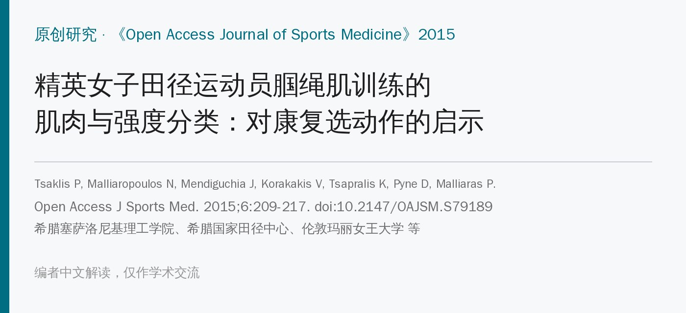
🔖原文信息（编者中文重排）
📚 文献信息
▪ Tsaklis P, Malliaropoulos N, Mendiguchia J, Korakakis V, Tsapralis K, Pyne D, Malliaras P. Muscle and intensity based hamstring exercise classification in elite female track and field athletes: implications for exercise selection during rehabilitation. Open Access Journal of Sports Medicine. 2015;6:209-217. doi:10.2147/OAJSM.S79189
▪ 作者单位：希腊塞萨洛尼基亚历山大理工学院、希腊国家田径中心运动损伤诊所、伦敦玛丽女王大学、卡塔尔 Aspetar 医院、西班牙 Zentrum 康复中心 等
▪ 文章类型：肌电研究（20 名运动员，同一批人做全部 10 个练习）
腘绳肌拉伤是田径运动中最常见的肌肉损伤，症状持续时间长、复发率高。拉伤多发生在疾跑的摆动末期：腘绳肌要减速屈髋和伸膝，紧接着伸髋，处于高负荷的离心收缩。
拉伤可以发生在腘绳肌的不同部位，但常用的腘绳肌训练到底练的是内侧还是外侧、强度有多大，了解得并不多。作者测了 10 个常用练习中股二头肌和半腱肌的肌电，想给康复选动作提供依据。
• 对象：20 名希腊国家队女子田径运动员（10 名短跑、6 名跳远、4 名三级跳），平均 22.8 岁；排除近 6 个月有腘绳肌损伤者
• 肌电：表面电极贴在优势腿的股二头肌长头（外侧）和半腱肌（内侧）
• 标准化：俯卧屈膝 45° 在等速仪上做最大等长收缩，以最大值的 80% 作为参照，把各练习的肌电换算成 %MVIC
• 动作时相：电子量角器同步记录膝角度，判断肌电峰值出现在肌肉—肌腱单元拉长、缩短还是长度不变时
• 练习：10 个练习按同一顺序各做 1 组 10 次，间隔 5 分钟；几乎都不负重
• 强度分级：<50% MVIC 为低强度，50%～80% 为中强度，≥80% 为高强度
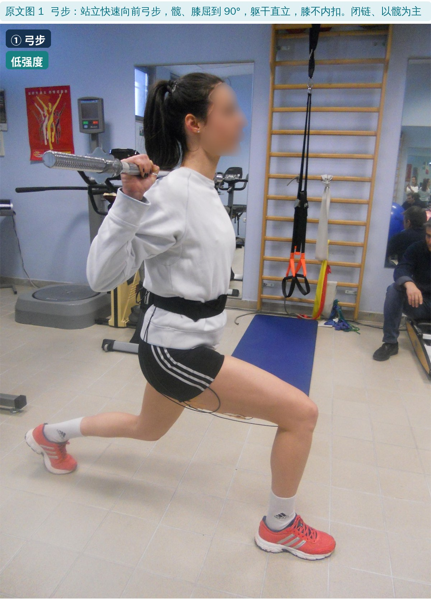
🔖原文图 1：弓步
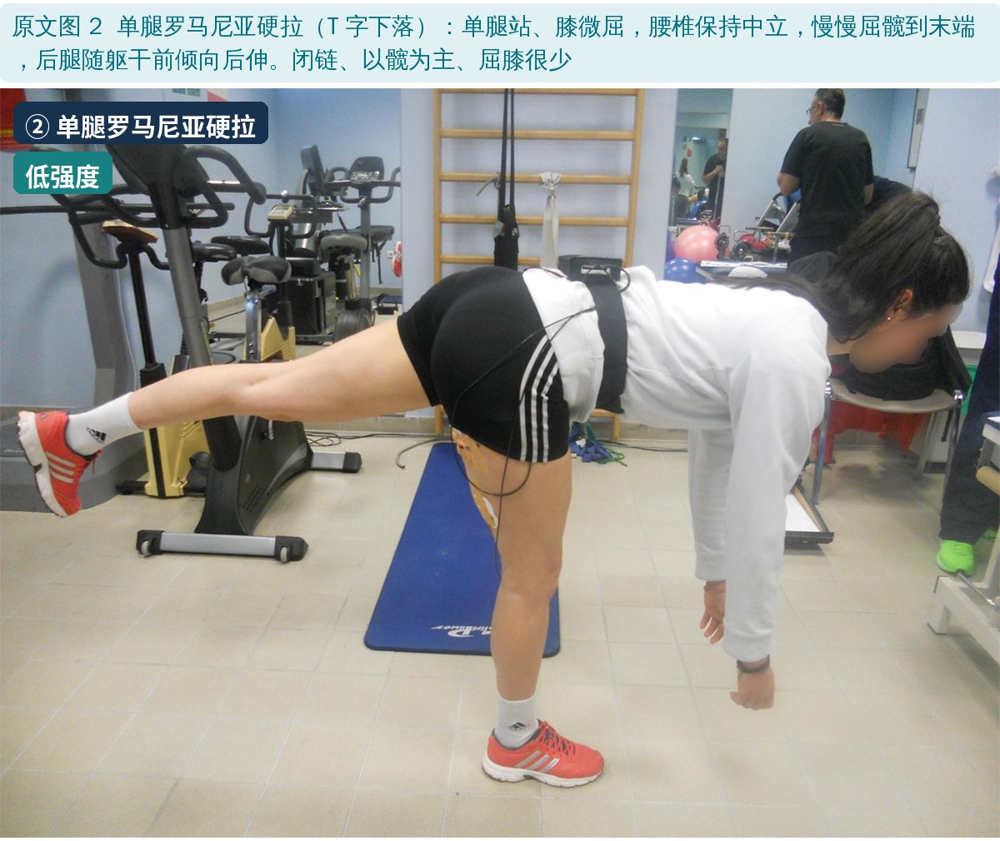
🔖原文图 2：单腿罗马尼亚硬拉
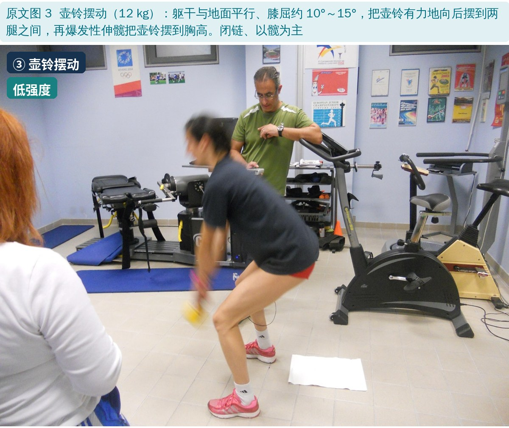
🔖原文图 3：壶铃摆动
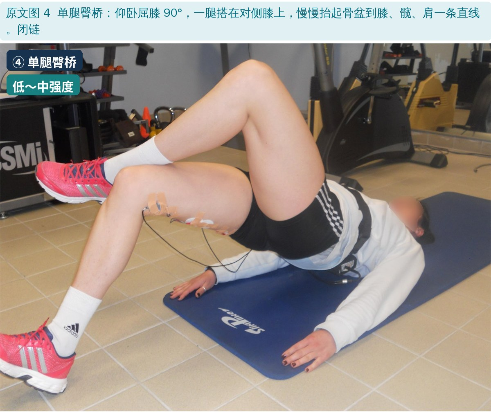
🔖原文图 4：单腿臀桥（接近中强度）
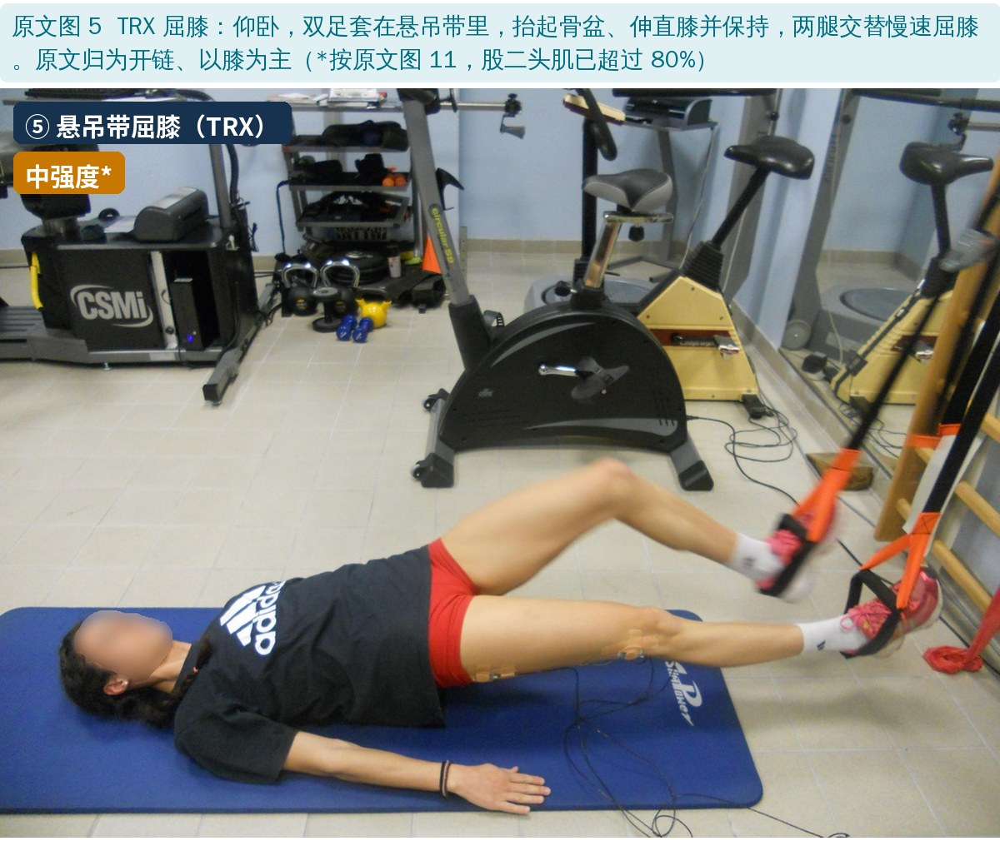
🔖原文图 5：TRX 屈膝
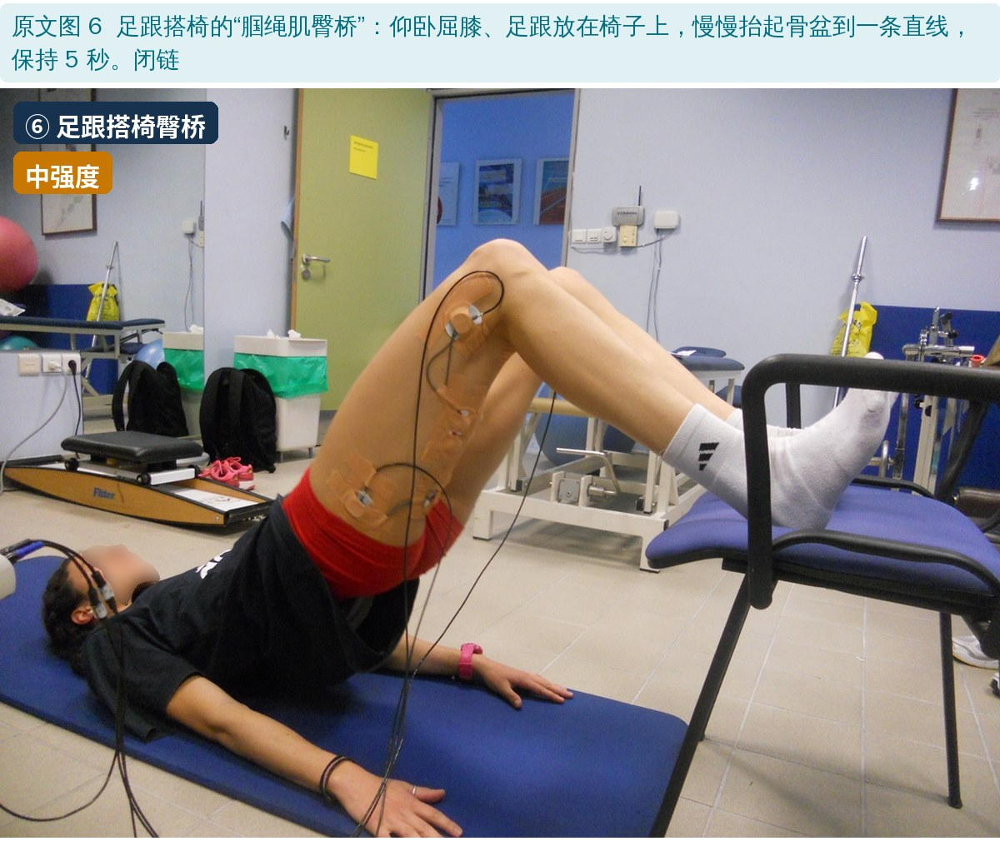
🔖原文图 6：足跟搭椅臀桥
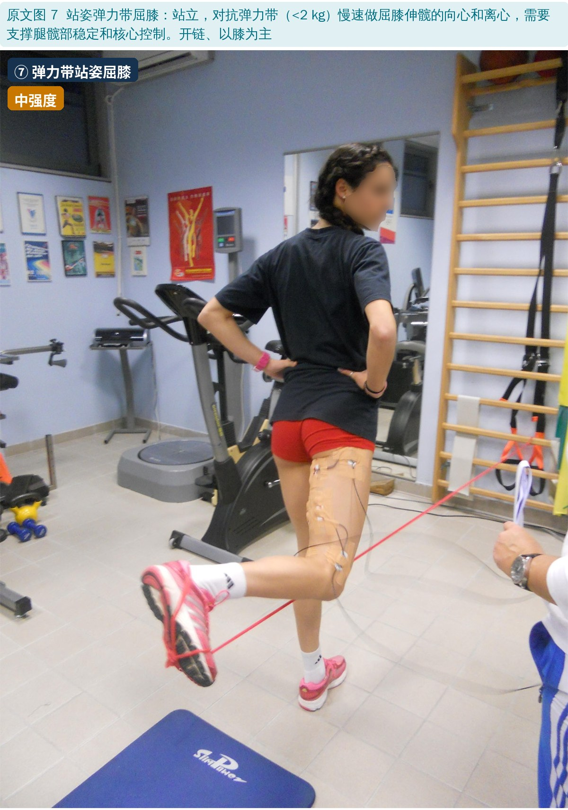
🔖原文图 7：弹力带站姿屈膝
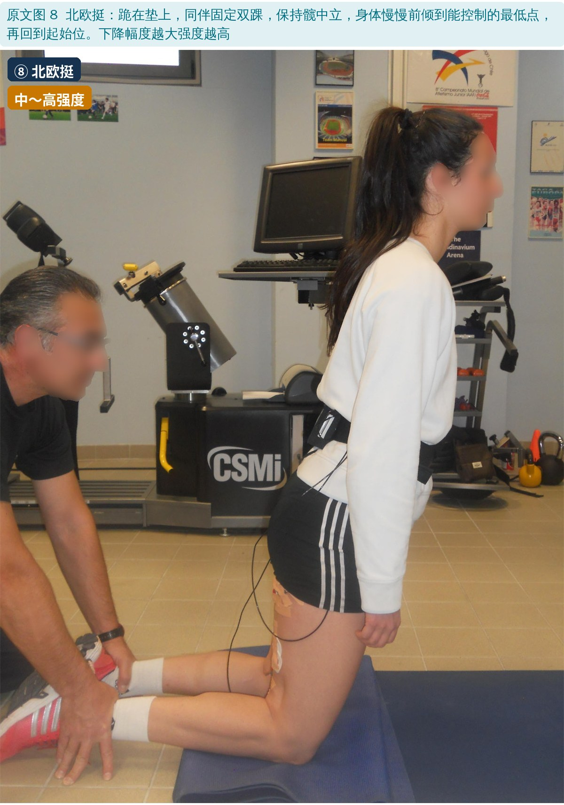
🔖原文图 8：北欧挺（下降越低强度越高）
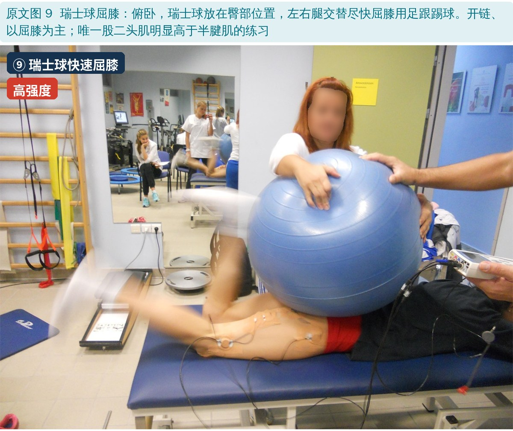
🔖原文图 9：瑞士球快速屈膝
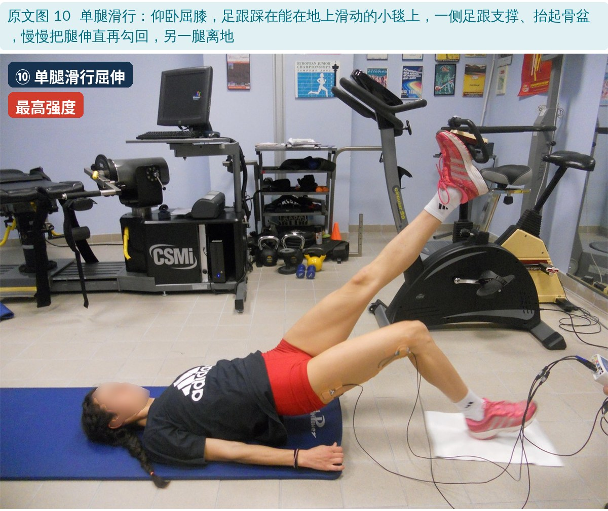
🔖原文图 10：单腿滑行屈伸
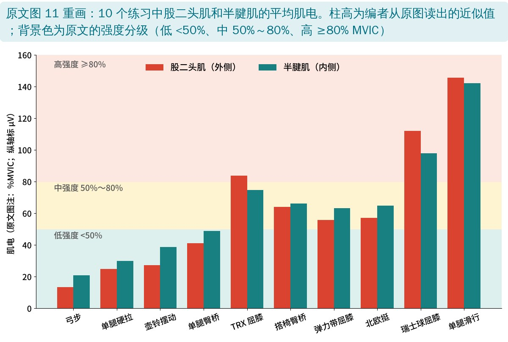
🔖两块肌肉的肌电（编者根据原文图 11 重画）
| 练习 | 强度 | 偏向 | 峰值时相 | 开链 / 闭链 |
|---|---|---|---|---|
| 弓步 | 低 | 半腱肌 | 拉长 | 闭链 |
| 单腿罗马尼亚硬拉 | 低 | 半腱肌 | 拉长＋缩短 | 闭链 |
| 壶铃摆动 | 低 | 半腱肌 | 拉长 | 闭链 |
| 单腿臀桥 | 低（接近中） | 无 | 缩短 | 闭链 |
| TRX 屈膝 | 中 | 无 | 长度不变 | 开链 |
| 足跟搭椅臀桥 | 中 | 无 | 缩短 | 闭链 |
| 弹力带站姿屈膝 | 中 | 无 | 缩短 | 开链 |
| 北欧挺 | 中～高 | 无 | 拉长＋缩短 | 开链 |
| 瑞士球快速屈膝 | 高 | 股二头肌 | 缩短 | 开链 |
| 单腿滑行屈伸 | 高（最高） | 无 | 拉长＋缩短 | 原文前后不一 |
原文表 1 和结果（中文整理）：强度、偏向哪块肌肉、肌电峰值出现的时相、开链还是闭链
• 低强度：弓步、单腿硬拉、壶铃摆动都是闭链、以髋为主，半腱肌比股二头肌更活跃；单腿臀桥接近中强度，没有偏向
• 高强度：瑞士球屈膝和单腿滑行；瑞士球快速屈膝是唯一偏向股二头肌的练习
• 拉长相出峰值：只有弓步和壶铃摆动的肌电峰值只出现在拉长相，两者都要求速度快
• 不负重也能高强度：北欧挺和单腿滑行不加外部负荷就能让整个腘绳肌高度激活
• 开链更高：肌电最高的两个是开链，最低的三个是闭链
• 没有报告统计结果：方法说用 t 检验比较两块肌肉，但全文没有给出任何 P 值、标准差或置信区间，“半腱肌更高”“股二头肌更高”都无法判断是否有统计学意义
• 标准化方法有问题：最大等长收缩时把两个通道的肌电平均后作为参照，再用同一个参照去换算两块肌肉——这样比较内外侧会受电极位置、皮下脂肪等影响；参照取最大值的 80% 也会让数值整体偏高（所以会出现 >100%）
• 只测了两块肌肉、一个位置：没测半膜肌和股二头肌短头，表面电极也只代表电极下方的局部
• 几乎不负重：临床上常给练习加负荷，结果未必能推到加负荷的情况；作者对比 Ebben 的研究，加负荷后屈膝和硬拉的肌电明显更高
• 顺序固定：10 个练习按同一顺序做，后面的练习可能受疲劳影响
• 只看了“拉长 / 缩短”：没有区分离心和向心收缩
• 只有女性：不能直接推到男性运动员
• 北欧挺算中强度还是高强度：摘要把北欧挺列为高强度；结果部分列为中强度（下降幅度大时才是高强度）；讨论又把它和单腿滑行并列为高强度。按图 11，北欧挺约 57%～65%，是中强度
• TRX 屈膝：按图 11，股二头肌约 84%，已经超过作者自己定的 80% 高强度线，原文却归为中强度；股二头肌也明显高于半腱肌，原文却说只有瑞士球屈膝偏向股二头肌
• 单腿滑行是开链还是闭链：方法写“闭链、以屈膝为主”，结果和表 1 写开链，讨论“肌电最高的两个是开链”的结论正是基于后者
• 图 11 单位：纵轴标“平均肌电（μV）”，图注写“%MVIC”
• 与其他研究对比的数值：讨论说本研究硬拉约 22% MVIC，但图 11 中硬拉两块肌肉约 25%～30%
• 足跟搭椅臀桥：方法写在顶端保持 5 秒（等长），表 1 却把峰值归为“缩短”
• 小错：“closed kinematic chain”“closed change exercises”（应为 kinetic chain）；表 1 两行都只写“Bridge”，分不清单腿臀桥和搭椅臀桥
• 按强度排进阶：急性拉伤后早期先用低强度的闭链动作（弓步、单腿硬拉、单腿臀桥），再到中强度（搭椅臀桥、弹力带屈膝、北欧挺），最后是高强度（单腿滑行、瑞士球快速屈膝）
• 想多练内侧：以髋为主的弓步、单腿硬拉、壶铃摆动半腱肌更活跃
• 想多练外侧：瑞士球快速屈膝是唯一偏向股二头肌的动作——而股二头肌长头恰恰是短跑拉伤最常见的部位
• 没器械也能练到位：北欧挺、单腿滑行不加负重就能高度激活
• 速度要看阶段：峰值出现在拉长相的动作都需要快速，早期要结合症状和愈合阶段控制速度
• 肌电高低只是参考，原文没有给出统计检验，具体选择还要结合损伤部位、疼痛和功能
欢迎关注骨科康复小黄公众号，获取更多物理治疗的专业知识！
📄参考文献：
Tsaklis P, Malliaropoulos N, Mendiguchia J, Korakakis V, Tsapralis K, Pyne D, Malliaras P. Muscle and intensity based hamstring exercise classification in elite female track and field athletes: implications for exercise selection during rehabilitation. Open Access J Sports Med. 2015;6:209-217. doi:10.2147/OAJSM.S79189
原文以 CC BY-NC 3.0 协议开放获取，版权归原作者所有。本文为非商业的学术交流中文解读：原文图 1～10 引自原文，图中中文标签为编者所加；肌电图根据原文图 11 重画（数值为编者读图近似值），表格为中文整理。仅供学习交流，如有侵权请联系删除。